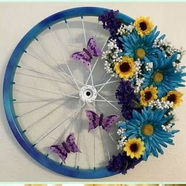

KOLEKSI PRODUK / 05
Hiasan Bunga dari Roda Bekas

Ulasan Produk
Hiasan bunga dari roda sepeda bekas merupakan kerajinan daur ulang yang memanfaatkan roda sepeda yang sudah tidak terpakai menjadi dekorasi yang indah dan menarik. Roda dihias menggunakan bunga artificial, daun hias, dan ornamen kupu-kupu agar terlihat lebih estetik.
Produk ini dapat digunakan sebagai hiasan dinding rumah, dekorasi kelas, atau properti acara. Selain mempercantik ruangan, kerajinan ini juga membantu mengurangi limbah barang bekas dan memiliki nilai jual.
Alat dan Bahan
- Roda sepeda bekas.
- Bunga artificial atau bunga palsu.
- Daun hias buatan.
- Kupu-kupu dekoratif.
- Cat besi atau cat semprot.
- Kawat bunga atau kabel ties.
- Stik lem.
- Tali atau pengait untuk menggantung.
- Gunting.
- Tang.
- Kuas cat (jika menggunakan cat oles).
- Lem tembak.
Langkah Kerja
- Siapkan roda sepeda bekas, lalu bersihkan dari debu dan kotoran.
- Cat bagian pelek roda sesuai warna yang diinginkan, kemudian tunggu hingga kering.
- Siapkan bunga artificial, daun hias, dan ornamen kupu-kupu.
- Susun bunga dan daun pada salah satu sisi roda sesuai desain yang diinginkan.
- Ikat bunga menggunakan kawat bunga atau kabel ties agar terpasang kuat.
- Tambahkan ornamen kupu-kupu untuk mempercantik tampilan.
- Rapikan rangkaian bunga dan periksa semua hiasan.
- Pasang tali atau pengait yang kuat agar roda dapat digantung dengan aman.
- Periksa hasil akhir dan pastikan tidak ada bagian tajam yang terbuka.
Catatan: Mintalah bantuan guru atau orang dewasa saat menggunakan alat pemotong dan memasang roda. Pastikan roda terpasang dengan kuat sebelum digunakan sebagai hiasan gantung.
Estimasi Biaya
A. Biaya Alat
Alat : Rp 0
B. Biaya Bahan
| Nama Bahan | Harga |
|---|---|
| Roda sepeda bekas | Rp 0 |
| Bunga artificial | Rp 10.000 |
| Daun hias bekas | Rp 5.000 |
| Cat bekas | Rp 0 |
| Lem tembak dan stik lem | Rp 3.000 |
| Kawat pengikat bekas | Rp 0 |
| Kupu-kupu dekoratif | Rp 5.000 |
| Tali penggantung bekas | Rp 0 |
| Total | Rp 23.000 |
C. Harga Jual
Harga jual hiasan bunga dari roda bekas diperkirakan sebesar Rp 35.000 per unit.
D. Laba
Laba bersih per unit = Harga Jual - HPP
Rp 35.000 - Rp 23.000 = Rp 12.000 per unit.
Produk Kreatif dari Barang Bekas
Barang bekas tidak selalu menjadi sampah. Dengan kreativitas, barang yang sudah tidak digunakan dapat diolah menjadi sesuatu yang memiliki manfaat dan nilai jual.
Kembali ke Produk